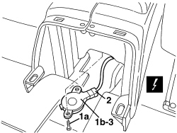
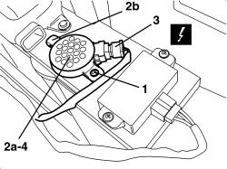

5580H12 PARKING OBSTACLE DETECTION DEVICE BUZZER - R.R.
- Path
- Procedures > 55 ELECTRICAL EQUIPMENT > 5580 SPECIAL ACCESSORIES > 5580H PARKING OBSTACLE DETECTION DEVICE > 5580H12 PARKING OBSTACLE DETECTION DEVICE BUZZER - R.R.
- Kind
- repair procedure (removal / refitting; the operation number is the code)
- Applies to
- all engines; all production periods
- Interactive page
- https://sloeber94.github.io/elrnDB-aBrrSpdr/en/#/946002478
Applies to: all engines; all production periods
 Removing
Removing
 Refitting
RefittingOp. 7050A22 REAR SEAT CUSHION - R+R
- Remove one of the seat belt rods.
Op. 7065B14 ANCHORAGE ROD FOR (ONE) REAR SEAT BELT LEFT OR RIGHT - R.R.
Op. 7040L22 REAR COVER ON TUNNEL - R.R.
1. Undo the bolt (1a) and extract the buzzer (1b).
2. Disconnect the electrical connection.
Description | Component |
|---|---|
PARKING SENSOR SPEAKER |
3. Keep the buzzer.

Applies to: all engines; all production periods
Refitting
Removing- Connect the electrical connection.
- Place the buzzer in position and secure it using the bolt.
Op. 7040L22 REAR COVER ON TUNNEL - R.R.
Op. 7065B14 ANCHORAGE ROD FOR (ONE) REAR SEAT BELT LEFT OR RIGHT - R.R.
Op. 7050A22 REAR SEAT CUSHION - R+R
- Check that the device is working properly.
Applies to: engines: 2.2 JTS, 3.2 JTS; all production periods; only with equipment: Spider
Removing
Refitting- Remove both seats.
Op. 7045A10 FRONT SEAT (ONE), LEFT OR RIGHT - R.R.
Op. 7040L37 GEAR LEVER TRIM - R.R
Op. 7040L23 TRIM ON TUNNEL COVER - R.R.
Op. 3380A44 HANDBRAKE/LINKAGE PROTECTION - R+R
Op. 7040H21 MOULDING ON PASSENGER COMPARTMENT REAR TRIM - R.R.
Op. 7040H22 PASSENGER COMPARTMENT REAR TRIM (SPIDER) - R.R.
Op. 7040L31 REAR ODDMENTS COMPARTMENT - R.R.
Op. 7040L51 REAR ODDMENTS COMPARTMENT SUPPORT - R.R.
Op. 7040L20 TUNNEL COVER - R.R
1. Undo the bolt.
2. Move buzzer (2a) by releasing it from retainer (2b).
3. Detach the electrical connection.
Description | Component |
|---|---|
PARKING SENSOR SPEAKER |
4. Recover the buzzer.

Applies to: engines: 2.2 JTS, 3.2 JTS; all production periods; only with equipment: Spider
Refitting
Removing- Check that the buzzer is not damaged.
- Attach the electrical connection.
- Position the buzzer and attach the retainer.
- Tighten the bolt.
Op. 7040L20 TUNNEL COVER - R.R
Op. 7040L31 REAR ODDMENTS COMPARTMENT - R.R.
Op. 7040L51 REAR ODDMENTS COMPARTMENT SUPPORT - R.R.
Op. 7040H22 PASSENGER COMPARTMENT REAR TRIM (SPIDER) - R.R.
Op. 7040H21 MOULDING ON PASSENGER COMPARTMENT REAR TRIM - R.R.
Op. 3380A44 HANDBRAKE/LINKAGE PROTECTION - R+R
Op. 7040L23 TRIM ON TUNNEL COVER - R.R.
Topics linked from this page (13)
- 3380A44 HANDBRAKE/LINKAGE PROTECTION - R+R
- 7040H21 MOULDING ON PASSENGER COMPARTMENT REAR TRIM - R.R.
- 7040H22 PASSENGER COMPARTMENT REAR TRIM (SPIDER) - R.R.
- 7040L20 TUNNEL COVER - R.R
- 7040L22 REAR COVER ON TUNNEL - R.R.
- 7040L23 TRIM ON TUNNEL COVER - R.R.
- 7040L31 REAR ODDMENTS COMPARTMENT - R.R.
- 7040L37 GEAR LEVER TRIM - R.R
- 7040L51 REAR ODDMENTS COMPARTMENT SUPPORT - R.R.
- 7045A10 FRONT SEAT (ONE), LEFT OR RIGHT - R.R.
- 7050A22 REAR SEAT CUSHION - R+R
- 7065B14 ANCHORAGE ROD FOR (ONE) REAR SEAT BELT LEFT OR RIGHT - R.R.
- P044 PARKING SENSOR SPEAKER